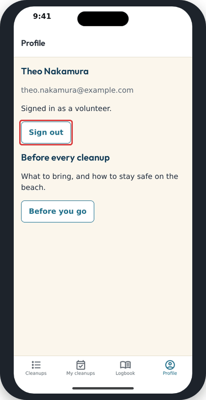
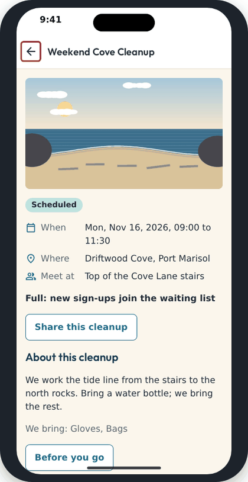

Who is holding the phone, and links that open the right screen.
| 0:00 | Warm-up: routes, tabs, modals |
| 0:10 | 4.3 Sign-in: model, demo, lab, project |
| 1:25 | Break (10 min) |
| 1:35 | 4.4 Deep links: model, demo, lab, project |
| 2:50 | Exit ticket, homework, what to bring next time |
labs/module-11. Work in starter/, never the solution./cleanups/e08? How does it read e08?(tabs) add to an address?presentation: 'modal' change, phone and web?if (router.canGoBack()) before router.back()?The wristband and the lockbox.
expo-secure-store: yesEXPO_PUBLIC_: neverisAvailableAsync() is false: ask first.POST /api/auth/sign-in (password: low-tide)
HTTP/1.1 401 Unauthorized
cache-control: no-store
content-type: application/json; charset=utf-8
vary: Origin
{
"error": "unauthorized",
"message": "Email or password is incorrect."
}
GET /api/events?when=upcoming&perPage=1 Authorization: Bearer st_forgotten_v04
HTTP/1.1 401 Unauthorized
cache-control: no-store
content-type: application/json; charset=utf-8
vary: Origin
{
"error": "unauthorized",
"message": "Your session has ended. Sign in again."
}
if (response.status === 401 && session !== null) { // The API no longer knows this sign-in (it restarted, or the session ended): forget it here too setSession(null);
session !== null.if (!(await SecureStore.isAvailableAsync())) { return; } try { const saved = await SecureStore.getItemAsync(sessionKey); const value: unknown = saved === null ? null : JSON.parse(saved); setSession(isSignInResponse(value) ? value : null); } catch (error) { console.warn('Could not read the saved session', error); } // Every change from now on (signing in, signing out, a session the API forgot) is saved too onSessionChange(saveCopy);
export function useSession(): Session | null { // The third function is for the web preview's server, which draws pages before any sign-in return useSyncExternalStore(onSessionChange, readSession, () => null); }
() => null: Missing getServerSnapshot on every page load. {/* Only for people who are not signed in: signing in takes this screen away */}
<Stack.Protected guard={session === null}>
<Stack.Screen name="sign-in" options={{ presentation: 'modal', title: 'Sign in' }} />
</Stack.Protected>
const session = await postSignIn({ email: email.trim(), password }); // Close the modal first, back to the screen that opened it. Then switch to signed in: the // guard takes this screen away at once, and if it were still open, you would land on the // first tab instead. if (router.canGoBack()) { router.back(); } setSession(session);
npx tsc --noEmit
src/app/(tabs)/profile.tsx:14:17 - error TS18047: 'session' is possibly 'null'.
14 const token = session.token;
~~~~~~~
Found 1 error in src/app/(tabs)/profile.tsx:14
session?.token.labs/module-11/l4_3-sign-in-flows-and-protected-routes/starterTests: 11 passed, 11 total
Back at 1:35. Behind on 4.3? lesson-14-start is in the downloads.
The grid reference on the crew map.
shorelinecrewcleanups/e08cleanups/[id].tsxshorelinecrew://cleanups/e08exp://192.168.1.42:8081/--/cleanups/e08http://localhost:8081/cleanups/e08shorelinecrew:// by hand: Expo Go does not own it.grep -n '"scheme"' app.json npx uri-scheme list
8: "scheme": "shorelinecrew", Could not find any native URI schemes to list.
// Whatever address the app opens at, the tabs are underneath it. A link straight to a cleanup // then has a back button, and back leads to the Cleanups tab instead of out of the app. export const unstable_settings = { anchor: '(tabs)', };
dismissTo, not replace: or two tab bars.
npx tsc --noEmit npx expo lint
env: load .env.local env: export EXPO_PUBLIC_API_URL
async function share() { const link = cleanupLink(event.id); try { // Android shares the title and the message only, so the link goes inside the message await Share.share({ title: event.title, message: cleanupMessage(event, link) }); } catch { // No share sheet here (the web preview in most desktop browsers): show the link instead setLinkToCopy(link); } }
npx tsc --noEmit
src/app/cleanups/[id].tsx:97:25 - error TS2345: Argument of type '{ title: string; }' is not assignable to parameter of type 'ShareContent'.
Property 'message' is missing in type '{ title: string; }' but required in type '{ title?: string | undefined; url?: string | undefined; message: string; }'.
97 await Share.share({ title: event.title });
~~~~~~~~~~~~~~~~~~~~~~
{ message, url } type-checks and loses the link on Android.labs/module-11/l4_4-deep-links/starter?join=yes must sign nobody upTests: 8 passed, 8 totalnpx uri-scheme open "exp://…/--/cleanups/e08" --android--ios on a Mac (Simulator: 127.0.0.1)spawn xcrun ENOENT: no Xcode, not your app